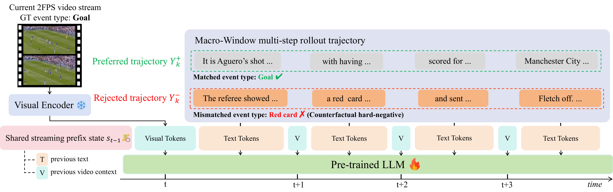
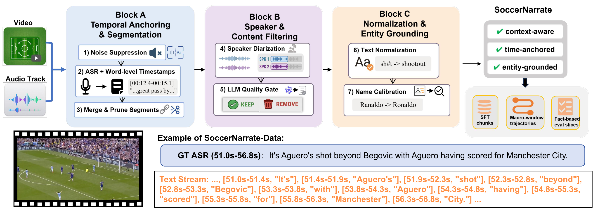
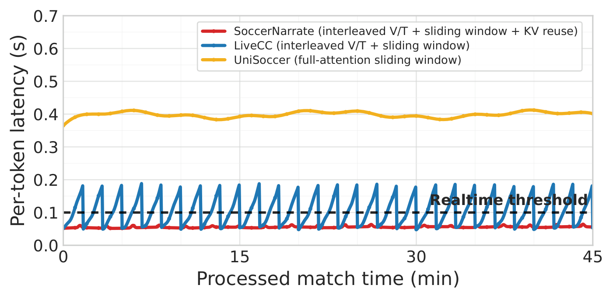

SoccerNarrate
Event-Grounded Streaming Soccer Commentary with Macro-Window Preference Alignment.

Live Commentary Demos
Causal 2 FPS streaming outputs (<0.3s per response on 1× H100) across key soccer events.
Method
Align multi-second event semantics via Macro-Window Preference Alignment while preserving 1-second causal decoding.

MWPA: Starting from the same streaming prefix state, we apply DPO over 15-second causal rollouts, contrasting ground-truth event narration against same-match event-mismatched counterfactual negatives—injecting event-level feedback without altering 1-second streaming inference.

SoccerNarrate-Data (436 matches · 502h curated ASR): Built with WhisperX word-level timestamps, speaker diarization, Qwen3-235B quality gating, and phoneme-based roster calibration, reducing player/team name errors from 28.4% to 0.1%.
Results
Evaluated on 45 full matches (14 key event classes, δ = 15s) in SoccerNarrate-Eval and 45-minute half latency tests.
SoccerNarrate-Eval (Table 2)
Recall / Precision / F1 (%)| Model | Mode | Class F1 | Overall F1 | Class R | Overall P |
|---|---|---|---|---|---|
| Video-LLaVA (7B) | Offline | 4.0 | 9.4 | 14.5 | 8.1 |
| Qwen2.5-VL (7B) | Offline | 22.6 | 23.4 | 32.6 | 31.1 |
| Qwen3-VL (8B) | Offline | 19.8 | 25.8 | 19.5 | 38.8 |
| Qwen3.5 (9B) | Offline | 23.8 | 37.3 | 42.6 | 28.8 |
| MatchTime (8B) | Offline Soccer | 9.6 | 22.7 | 11.8 | 23.7 |
| UniSoccer (8B) | Offline Soccer | 29.4 | 32.0 | 50.4 | 23.5 |
| SoccerChat (7B) | Offline Soccer | 32.9 | 45.6 | 51.1 | 35.6 |
| TimeSoccer (7B) | Offline Soccer | 24.5 | 30.4 | 41.5 | 23.6 |
| VideoChat-Online (4B) | Streaming | 3.0 | 2.8 | 3.2 | 9.4 |
| LiveCC (7B) | Streaming | 2.7 | 3.7 | 2.6 | 7.9 |
| LiveStar (8B) | Streaming | 11.9 | 16.4 | 17.5 | 24.2 |
| LiveCC (FT, 7B) | Streaming Soccer | 9.7 | 10.7 | 8.2 | 34.0 |
| StreamingVLM (7B) | Streaming Soccer | 28.5 | 34.2 | 33.2 | 40.9 |
| StreamingVLM (FT, 7B) | Streaming Soccer | 30.0 | 35.3 | 34.6 | 42.3 |
| SoccerNarrate (7B) | Streaming Soccer | 46.9 | 54.4 | 71.8 | 48.8 |
45-Min Streaming Latency
1× NVIDIA H100
Bounded KV-cache reuse keeps per-token latency flat (~0.05 s/tok) below the 0.1 s/tok (10 tok/s) real-time threshold without periodic spikes.
Citation
If SoccerNarrate is helpful for your research, please cite our NeurIPS 2026 paper.
@inproceedings{jia2026soccernarrate,
title = {SoccerNarrate: Event-Grounded Streaming Soccer Commentary
with Macro-Window Preference Alignment},
author = {Jia, Zihan and Dai, Zhilin and Zhang, Zhengming and Yang, Min and
Huang, Zhenpeng and Li, Jiaqi and Sun, Caixia and Chen, Xi and
Li, Liang and Feng, Junlan and Wu, Gangshan and Wang, Limin},
booktitle = {Advances in Neural Information Processing Systems (NeurIPS)},
year = {2026}
}